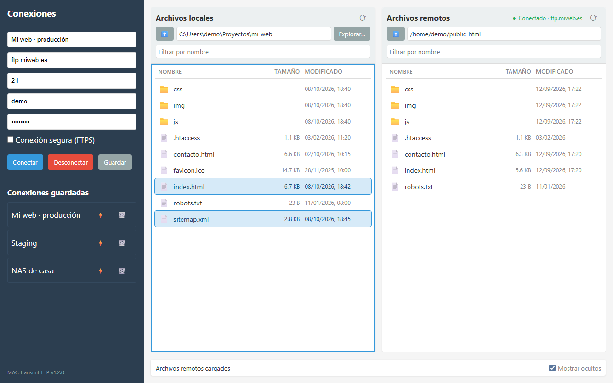

Doble panel
Archivos locales y remotos lado a lado, con carpetas primero, tamaño y fecha de modificación en ambos paneles.
Código abierto · ISC · v1.2.0
Cliente FTP y FTPS de escritorio inspirado en Transmit. Tu equipo a la izquierda, el servidor a la derecha: arrastra archivos o carpetas completas y sigue cada transferencia con su progreso real.

Escribe host, puerto, usuario y contraseña, o elige una conexión guardada y pulsa ⚡. El panel remoto se abre en tu carpeta de inicio del servidor.
Selecciona uno o varios elementos con Ctrl/Mayús+clic. Archivos y carpetas, en cualquiera de los dos paneles.
Doble clic, Intro o arrástralos al otro panel. Si algo ya existe en destino, decides si sobrescribir u omitirlo.
Instaladores para Windows, macOS y Linux. Gratis, sin anuncios y con el código en GitHub.
Lo necesario para mantener una web o un alojamiento por FTP sin pelearte con la herramienta.
Archivos locales y remotos lado a lado, con carpetas primero, tamaño y fecha de modificación en ambos paneles.
Arrastra entre los dos paneles para subir o descargar, o suelta archivos y carpetas desde el explorador del sistema en el panel remoto.
Sube y descarga carpetas con todo su contenido. Si ya existen en destino se combinan, sobrescribiendo solo los archivos con el mismo nombre.
Porcentaje, velocidad, archivo actual y elementos en cola. Cancelar detiene la transferencia y elimina el archivo que quedaba a medias.
Antes de pisar algo te pregunta: Sobrescribir, Omitir existentes o Cancelar. Un clic solo selecciona; transferir es un gesto explícito.
Las conexiones guardadas cifran la contraseña con el almacén seguro del sistema operativo. Nada viaja a ningún servidor que no sea el tuyo.
Si el servidor cierra la sesión por inactividad, la app vuelve a conectar y repite la operación sin que tengas que hacer nada.
Menú contextual para renombrar, eliminar y crear carpetas en local y en el servidor. En local, eliminar envía a la papelera.
Atajos para todo lo habitual, filtro por nombre en cada panel, botón actualizar y opción para ocultar los archivos que empiezan por punto.
Funcionan en el panel que tiene el foco (haz clic en él primero).
| Tecla | Acción |
|---|---|
| Intro · doble clic | Abrir la carpeta, o transferir los elementos seleccionados al otro panel |
| Retroceso | Ir a la carpeta superior |
| ↑ ↓ · Mayús+↑ ↓ | Moverse por la lista · ampliar la selección |
| Ctrl+clic · Mayús+clic | Añadir o quitar de la selección · seleccionar un rango |
| Ctrl+A | Seleccionar todo lo visible |
| F2 | Renombrar |
| Supr | Eliminar (a la papelera en local, definitivo en el servidor) |
| F5 | Actualizar el panel |
| Esc | Quitar la selección o cerrar el menú |
Capturas reales de la aplicación conectada a un alojamiento de ejemplo, con un proyecto web en local. Haz clic para ampliar.
Última versión: v1.2.0
Instalador .exe · 64 bits
Imagen .dmg · Apple Silicon
Ejecutable .AppImage · 64 bits
¿Prefieres ver todos los archivos? Todas las versiones en GitHub.
SmartScreen puede avisar de que el editor es desconocido porque el instalador no está firmado. Pulsa Más información → Ejecutar de todas formas.
Si Gatekeeper bloquea la app, ábrela con clic derecho → Abrir, o ejecuta
xattr -cr "/Applications/MAC Transmit FTP.app".
Dale permisos de ejecución: chmod +x MAC-Transmit-FTP-*.AppImage y lánzalo con doble clic.
En Ubuntu 22.04 o posterior puede hacer falta instalar libfuse2.
git clone https://github.com/cmurestudillos/mac-ftp.git
cd mac-ftp
pnpm install
pnpm start # ejecutar en desarrollo
pnpm package:win # generar instalador de Windows
pnpm package:mac # generar imagen de macOS (solo desde un Mac)
pnpm package:linux # generar AppImage
Requisitos: Node.js 22.12+ y pnpm 12. Los instaladores se generan en release/.
Rellena Host, Puerto (21 por defecto), Usuario y Contraseña y pulsa Conectar. Marca Conexión segura (FTPS) si tu servidor usa TLS. El panel remoto se abre en tu carpeta de inicio del servidor y el indicador de la cabecera pasa a Conectado. Desconectar cierra la sesión.
Ponle un nombre y pulsa Guardar. Aparece en Conexiones guardadas: un clic rellena el formulario, ⚡ conecta directamente y 🗑️ la elimina. Guardar con un nombre que ya existe actualiza esa conexión.
Doble clic en una carpeta para entrar y ⬆️ (o Retroceso) para subir. Explorar… abre cualquier carpeta local. El campo Filtrar por nombre reduce la lista al instante y ⟳ (o F5) la actualiza. Los enlaces simbólicos del servidor aparecen con 🔗 y se abren como carpeta si apuntan a una.
Los elementos siempre van a la carpeta abierta en el otro panel. Doble clic en un archivo (o Intro con varios seleccionados) lo sube o lo descarga; para una carpeta usa el menú contextual o arrástrala. También puedes soltar archivos desde el explorador del sistema en el panel remoto. Las transferencias se encolan y se hacen de una en una; la barra inferior muestra el progreso y permite cancelar.
Clic derecho en un panel: Abrir, Subir/Descargar, Renombrar, Eliminar, Nueva carpeta y Actualizar. En local, eliminar mueve a la papelera; en el servidor el borrado es definitivo y las carpetas se eliminan con todo su contenido, por eso siempre se pide confirmación.
Las contraseñas de las conexiones guardadas se cifran con el almacén seguro del sistema (DPAPI en Windows, Llavero en macOS, gnome-keyring o KWallet en Linux). En Linux sin llavero la conexión se guarda sin la contraseña y tendrás que escribirla al conectar. Las conexiones guardadas por versiones anteriores, que guardaban la contraseña en texto plano, se cifran automáticamente al abrir la app.
Recuerda que FTP sin cifrar envía usuario y contraseña en claro por la red: si tu servidor lo admite, usa FTPS.
├── main.js # proceso principal: ventana, cliente FTP (basic-ftp), transferencias e IPC
├── preload.js # puente IPC seguro (contextIsolation activo)
├── renderer.js # interfaz: paneles, selección, atajos, cola de transferencias y menú contextual
├── index.html # estructura de la ventana
├── styles.css # estilos con tema claro y oscuro
└── assets/ # iconos de la aplicaciónConstruida con Electron, basic-ftp para el protocolo FTP/FTPS y electron-store para las conexiones guardadas. Sin frameworks de UI: HTML, CSS y JavaScript.
Los issues y pull requests son bienvenidos. Abre un issue describiendo el bug (sistema operativo, tipo de servidor y si usas FTP o FTPS) o la funcionalidad que echas de menos.